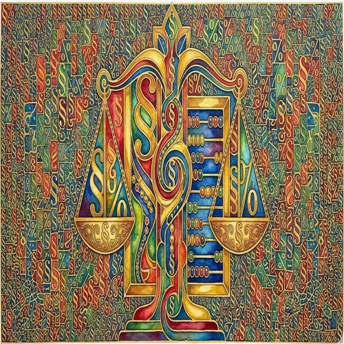
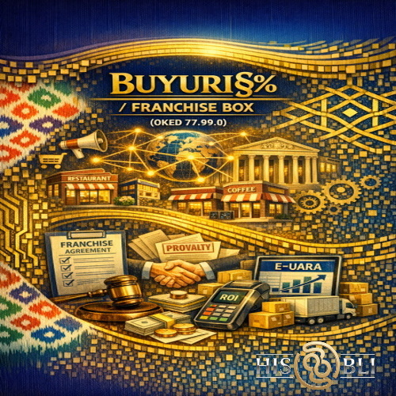
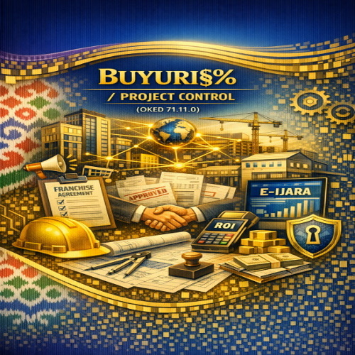

BUYURI§%
ЛИНИЯ ПРОДУКТОВ
BUYURI§%
MAHSULOTLAR LINIYASI
Каждый продукт — это отдельный стандартизированный контур. Не пакет услуг. Не набор опций.
Контур — это:
Har bir mahsulot — bu alohida standartlaştirilgan kontur. Bu xizmatlar paketi emas. Opsiyalar tõplami ham emas.
Kontur — bu:
-
 - заранее определённый состав операций;
- заранее определённый состав операций;
-
- фиксированные алгоритмы учёта;
-
- понятные границы ответственности;
-
- предсказуемая процессная нагрузка.
-
- oldindan belgilangan operatsiyalar tarkibi;
-
- fiksatsiyalangan hisob algoritmlari;
-
- tushunarli mas’uliyat çegaralari;
-
- oldindan ma’lum bõlgan jarayon yuklamasi.
Патентованный стандартизированный финансово-правовой Контур ООО «HISOBLI» применяется не как универсальная модель “под любой бизнес”, а через фиксированные режимы функционирования, соответствующие характеру финансовых потоков и структуре деятельности.
Режим/продукт определяет не перечень действий, а способ интерпретации и сопровождения операций в рамках контура.
Выбор продукта не является предметом произвольного обсуждения и осуществляется исходя из объективной структуры деятельности, через коды ОКЕД, например.
ООО «HISOBLI» не адаптирует контур под каждую отдельную задачу.
Режим/продукт задаёт рамки, внутри которых формируется согласованная и воспроизводимая система работы.
«HISOBLI» MÇJning patentlangan standartlaştirilgan moliyaviy-huquqiy konturi şunçaki "har qanday biznes" uçun universal model emas, balki faoliyat tarkibi va moliyaviy oqimlar xarakteriga mos keluvçi qat'iy iş rejimlari orqali tatbiq etiladi.
Rejim yoki mahsulot harakatlar rõyxatini emas, balki kontur doirasidagi operatsiyalarni talqin qiliş va kuzatib boriş uslubini belgilaydi.
Mahsulotni tanlaş ixtiyoriy muhokama predmeti hisoblanmaydi hamda faoliyatning ob'ektiv tuzilmasidan kelib çiqib, masalan, IFUT kodlari orqali amalga oşiriladi.
«HISOBLI» MÇJ konturni har bir alohida vazifaga moslaştirib õtirmaydi.
Rejim yoki mahsulot iş tizimining muvofiqlaştirilgan va barqaror takrorlanuvçi çegaralarini belgilab beradi.

Торговая марка - BUYURI§%
BUYURI§% - savdo belgisi
В торговом наименовании запечатлен интеллектуальный ребус:
BU-хгалтерия + YUR-иридик + I§% (иш),
где буква S художественно заменена знаком § — символом юридического делопроизводства, а буква H заменена знаком % — символом учёта.
В собранном виде это маркетинговый императив «Закажи!»
и девиз: BUXGALTERIYA IŞLARI ≡ YURIDIK IŞLAR.
Savdo nomining zamirida õziga xos intellektual rebus mujassam:
BU-xgalteriya + YUR-idik + I§% (iş),
bu yerda S harfi õrnini yuridik iş yuritiş ramzi bõlgan § belgisi, H harfi õrnini esa hisob-kitob ramzi — % belgisi egallagan.
Yaxlit holatda esa bu ham marketing çorlovi — «Buyuriş!»,
ham asosiy şior hisoblanadi: BUXGALTERIYA IŞLARI ≡ YURIDIK IŞLAR.
BUYURI§% CAPITAL CONTROL
(Специально для кода ОКЭД 64.20.0)
«Капитал любит тишину и точность»
Описание: Консалтинговая компания HISOBLI внедряет этот контур для управления движением капитала, владения активами и защиты от субсидиарной ответственности.
В контур входит: Весь стандартный пакет бухгалтерских услуг + услуги удалённого юрисконсульта предприятия (без права представительства в судах), а также: Учёт дивидендных выплат, займов, переоценка валютных статей баланса и оформление учётных последствий корпоративных операций.
Процессная рамка: Контур функционирует строго на основании решений участников. В рамках сопровождения мы обеспечиваем мониторинг специфической статистической нагрузки: 1-invest (основной), FDI и 4-moliya, исключая оценку экономической целесообразности решений.
Граница контура: Не включает корпоративные споры, оценку бизнеса и сопровождение сделок.
Профиль: Холдинги, SPV и Owner-Companies.
(OKED 64.20.0 kodi uçun maxsus)
«Sarmoya tinçlik va aniq hisob-kitobni xuş kõrar»
Tavsif: HISOBLI konsalting kompaniyasi uşbu tizimni kapital harakatini boşqariş, aktivlarga egalik qiliş va subsidiar javobgarlikdan himoyalaniş uçun joriy qiladi.
Tizim tarkibi: Buxgalteriya xizmatlarining tõliq paketi + korxonaning masofaviy yurist-konsultanti xizmati (sudlarda vakillik qilişdan taşqari), şuningdek: Dividend tõlovlari va qarzlar hisobi, balansning valyuta moddalarini qayta baholaş hamda korporativ operatsiyalarning hisobdagi oqibatlarini rasmiylaştiriş.
Iş doirasi: Tizim qat’iy ravişda ta’sisçilar qarorlari asosida işlaydi. Kuzatuv doirasida biz õziga xos statistik yuklamalarni nazorat qilamiz: 1-invest (asosiy), FDI va 4-moliya. Qarorlarning iqtisodiy jihatdan qançalik maqsadga muvofiqligini baholaş bizning vazifamizga kirmaydi.
Çegaralar: Korporativ nizolar, biznesni baholaş va bitimlarni kuzatib borişni õz içiga olmaydi.
Profil: Holdinglar, SPV va Owner-kompaniyalar.
BUYURI§% DIGITAL EXPORT
(Специально для кода ОКЭД 62.01.0, 62.02.0)
«Экспорт услуг без бухгалтерского шума»
Описание: Консалтинговая компания HISOBLI внедряет этот Процессный контур для IT-сектора и консалтинга, сфокусированный на валютном контроле и применении налоговых преференций.
В контур входит: Весь стандартный пакет бухгалтерских услуг + услуги удалённого юрисконсульта предприятия (без права представительства в судах), а также: Учёт валютных поступлений, регистрация инвойс-контрактов в системе E-Contract (ЕЭИСВО), подтверждение нулевой ставки налога и свод оплат от нерезидентов.
Процессная рамка: Работа ведётся в пределах действующего валютного регулирования. Мы обеспечиваем мониторинг критериев льгот IT-Park и сопровождение по формам 1-korxona (tif) и 4-mehnat.
Граница контура: Не включает поиск контрагентов и договорные переговоры.
Профиль: Резиденты IT-Park, EdTech и цифровые агентства.
( OKED 62.01.0, 62.02.0 kodlari uçun maxsus)
«Xizmatlar eksporti — buxgalteriya maşmaşalarisiz»
Tavsif: HISOBLI konsalting kompaniyasi uşbu işçi tizimni IT-sektori va konsalting uçun joriy qiladi. Asosiy e’tibor valyuta nazorati va soliq imtiyozlarini tõğri qõllaşga qaratilgan.
Tizim tarkibi: Buxgalteriya xizmatlarining tõliq paketi + korxonaning masofaviy yurist-konsultanti xizmati (sudlarda vakillik qilişdan taşqari), şuningdek: Valyuta tuşumlari hisobi, invoys-kontraktlarni E-Contract (YAIATV) tizimida rõyxatdan õtkaziş, nol darajali soliq stavkasini tasdiqlaş va nerezidentlardan kelgan tõlovlar monitoringi.
Iş doirasi: Işlar amaldagi valyuta tartibga soliş qoidalari doirasida olib boriladi. Biz IT-Park imtiyozlari mezonlarini kuzatib boramiz hamda 1-korxona (tif) va 4-mehnat şakllari bõyiça hisobotlarni topşiramiz.
Çegaralar: Kontragentlarni qidiriş va şartnoma bõyiça muzokaralar olib borişni õz içiga olmaydi.
Profil: IT-Park rezidentlari, EdTech va raqamli agentliklar.
BUYURI§% PUBLIC INTERFACE
(Специально для кода ОКЭД 82.99.0)
«Цифры на стыке бизнеса и государства»
Описание: Консалтинговая компания HISOBLI внедряет этот Контур для операторов государственных функций, обеспечивающий строгий комплаенс в рамках административных регламентов и тарифов.
В контур входит: Весь стандартный пакет бухгалтерских услуг + услуги удалённого юрисконсульта предприятия (без права представительства в судах), а также: Учёт целевых сборов по гостарифам, массовая выписка ЭСФ и фиксация цифровых доказательств выполнения функций.
Процессная рамка: Контур функционирует строго в пределах утверждённых регламентов. Техническое наполнение отчётности включает мониторинг по формам 1-korxona и 1-akt (использование ИКТ).
Граница контура: Не включает представительство в проверках и спорах.
Профиль: Частные операторы госфункций и ЦОД.
(OKED 82.99.0 kodi uçun maxsus)
«Biznes va davlat tutaşgan nuqtadagi raqamlar»
Tavsif: HISOBLI konsalting kompaniyasi uşbu tizimni davlat funksiyalarini bajaruvçi operatorlar uçun joriy qiladi. Bu ma’muriy reglamentlar va tariflar doirasida qat’iy tartibni ta’minlaydi.
Tizim tarkibi: Buxgalteriya xizmatlarining tõliq paketi + korxonaning masofaviy yurist-konsultanti xizmati (sudlarda vakillik qilişdan taşqari), şuningdek: Davlat tariflari bõyiça maqsadli yiğimlar hisobi, ommaviy elektron hisob-faktura (EHF) çiqariş va funksiyalar bajarilganligini raqamli tasdiqlaş.
Iş doirasi: Tizim qat’iy ravişda tasdiqlangan reglamentlar doirasida işlaydi. Hisobotlarning texnik qismi 1-korxona va 1-akt (AKTdan foydalaniş) şakllari bõyiça monitoringni õz içiga oladi.
Çegaralar: Tekşiruvlar va nizolarda vakillik qilişni õz içiga olmaydi.
Profil: Davlat funksiyalarining xususiy operatorlari va ma’lumotlar markazlari.
BUYURI§% RENTFLOW
(Специально для кода ОКЭД 68.20.0)
«Аренда, которая отчитается сама»
Описание: Консалтинговая компания HISOBLI внедряет данный финансово-правовой контур для владельцев недвижимости, интегрированный с системой E-Ijara и нормами ст. 243 НК РУз.
В контур входит: Весь стандартный пакет бухгалтерских услуг + услуги удалённого юрисконсульта предприятия (без права представительства в судах), а также: Администрирование данных в E-Ijara, контроль возмещения эксплуатационных расходов и защита от переквалификации коммунальных платежей в доход.
Процессная рамка: Контур работает на основании действующих договоров аренды. Сопровождение включает формирование финансовой статистики по формам 4-moliya и 1-moliya.
Граница контура: Не включает согласование условий аренды и переговоры с арендаторами.
Профиль: Владельцы БЦ и складских комплексов.
(OKED 68.20.0 kodi uçun maxsus)
«Õzi uçun õzi hisobot beradigan ijara»
Tavsif: HISOBLI konsalting kompaniyasi uşbu moliyaviy-huquqiy tizimni kõçmas mulk egalari uçun joriy qiladi. U E-Ijara tizimi va Soliq kodeksining 243-moddasi talablariga tõliq moslaştirilgan.
Tizim tarkibi: Buxgalteriya xizmatlarining tõliq paketi + korxonaning masofaviy yurist-konsultanti xizmati (sudlarda vakillik qilişdan taşqari), şuningdek: E-Ijara tizimini boşqariş, kommunal xarajatlar qoplanişini nazorat qiliş va uşbu tõlovlarning asossiz ravişda daromadga çiqib ketişidan himoyalaş.
Iş doirasi: Tizim amaldagi ijara şartnomalari asosida işlaydi. Xizmat tarkibiga 4-moliya va 1-moliya şakllari bõyiça statistikani şakllantiriş kiradi.
Çegaralar: Ijara şartlarini kelişiş va ijaraçilar bilan muzokaralar olib borişni õz içiga olmaydi.
Profil: Biznes markazlari va omborxona majmualari egalari.

BUYURI§% FRANCHISE BOX
(Специально для кода ОКЭД 77.40.0)
«Один шаблон — несколько бизнес единиц»
Описание: Консалтинговая компания HISOBLI внедряет этот Контур стандартизации учёта для сетевых структур в рамках договора комплексной предпринимательской лицензии (ст. 866-868 ГК РУз).
В контур входит: Весь стандартный пакет бухгалтерских услуг + услуги удалённого юрисконсульта предприятия (без права представительства в судах), а также: Унифицированный учёт по точкам, контроль выплаты роялти и консолидация («схлопывание») отчётов маркетплейсов в единые проводки.
Процессная рамка: Контур ориентирован на абсолютную идентичность процедур. Статистическая нагрузка включает отчёт 1-korxona с приложениями по розничному обороту.
Граница контура: Не включает разработку бизнес-модели и стратегическое управление.
Профиль: Франшизы и сетевые проекты, за исключением предприятий общепита.
(OKED 77.40.0 kodi uçun maxsus)
«Bitta qolip — butun boşli tarmoq»
Tavsif: HISOBLI konsalting kompaniyasi uşbu hisobni standartlaştiriş tizimini tarmoqli tuzilmalar (FK 866-868-moddalari, franşiza şartnomalari) uçun joriy qiladi.
Tizim tarkibi: Buxgalteriya xizmatlarining tõliq paketi + korxonaning masofaviy yurist-konsultanti xizmati (sudlarda vakillik qilişdan taşqari), şuningdek: Nuqtalar bõyiça bir xillaştirilgan hisob, royalti tõlovlarini nazorat qiliş va marketpleys hisobotlarini yagona tizimga birlaştiriş.
Iş doirasi: Tizim barça jarayonlarning aynan bir xil bõlişiga qaratilgan. Statistik yuklama 1-korxona hisoboti va çakana savdo bõyiça ilovalarni õz içiga oladi.
Çegaralar: Biznes-modelni işlab çiqiş va strategik boşqaruvni õz içiga olmaydi.
Profil: Franşizalar va tarmoqli loyihalar (umumiy ovqatlaniş korxonalari bundan mustasno).

BUYURI§% PROJECT CONTROL
(Специально для кода ОКЭД 71.11.0, 71.12.0)
«Минимум документов. Максимум смысла»
Описание: Консалтинговая компания HISOBLI внедряет этот контур для Пообъектного учёта затрат для проектных бюро и защита интеллектуальных прав по ст. 1031 ГК РУз.
В контур входит: Весь стандартный пакет бухгалтерских услуг + услуги удалённого юрисконсульта предприятия (без права представительства в судах), а также: Отражение этапов работ по ПСД, учёт специфических расходов на изыскания и оформление актов по ст. 703 ГК.
Процессная рамка: Контур работает в пределах заранее определённой структуры проекта. Мониторинг включает подачу статистических форм 1-korxona и 4-moliya.
Граница контура: Не включает управление проектами и контроль исполнения.
Профиль: Проектные и инженерные бюро.
(OKED 71.11.0, 71.12.0 kodlari uçun maxsus)
«Kamroq qoğoz — kõproq ma’no»
Tavsif: HISOBLI konsalting kompaniyasi uşbu tizimni loyiha byurolari uçun xarajatlarni har bir ob’ekt bõyiça alohida hisoblaş hamda intellektual huquqlarni himoya qiliş (FK 1031-modda) uçun joriy qiladi.
Tizim tarkibi: Buxgalteriya xizmatlarining tõliq paketi + korxonaning masofaviy yurist-konsultanti xizmati (sudlarda vakillik qilişdan taşqari), şuningdek: Loyiha-smeta hujjatlari bõyiça iş bosqiçlarini aks ettiriş, qidiruv işlari xarajatlari hisobi va FK 703-moddasi bõyiça dalolatnomalarni tayyorlaş.
Iş doirasi: Tizim loyihaning oldindan belgilangan tuzilmasi doirasida işlaydi. Monitoring 1-korxona va 4-moliya statistik şakllarini topşirişni õz içiga oladi.
Çegaralar: Loyihalarni boşqariş va ijro nazoratini õz içiga olmaydi.
Profil: Loyihalaş va muhandislik byurolari.
BUYURI§% REGULATORY COMPLIANCE
(Специально для кода ОКЭД 94.99.0)
«Отчётность ради закона, а не ради прибыли»
Описание: Консалтинговая компания HISOBLI внедряет этот Контур обеспечения методологической прозрачности деятельности ННО и фондов перед Минюстом и ГНК.
В контур входит: Весь стандартный пакет бухгалтерских услуг + услуги удалённого юрисконсульта предприятия (без права представительства в судах), а также: Учёт грантов и членских взносов, контроль целевого использования средств и кадровая дисциплина по ст. 460 ТК РУз.
Процессная рамка: Обеспечение прозрачности процессов через сдачу специфической отчётности по форме 1-nnt в органы юстиции.
Граница контура: Только техническое сопровождение процесса без участия в управлении организацией.
Профиль: Некоммерческие организации и фонды.
(OKED 94.99.0 kodi uçun maxsus)
«Hisobot foyda uçun emas, qonun uçun»
Tavsif: HISOBLI konsalting kompaniyasi uşbu tizimni NNT va jamğarmalarning Adliya vazirligi hamda Soliq organlari oldidagi şaffofligini ta’minlaş uçun joriy qiladi.
Tizim tarkibi: Buxgalteriya xizmatlarining tõliq paketi + korxonaning masofaviy yurist-konsultanti xizmati (sudlarda vakillik qilişdan taşqari), şuningdek: Grantlar va a’zolik badallari hisobi, mablağlardan maqsadli foydalanişni nazorat qiliş va kadrlar intizomi (MK 460-modda).
Iş doirasi: Adliya organlariga 1-nnt şakli bõyiça maxsus hisobotlarni topşiriş orqali jarayonlar oçiqligini ta’minlaş.
Çegaralar: Taşkilotni boşqarişda qatnaşmagan holda faqat texnik kuzatuv.
Profil: Notijorat taşkilotlar va jamğarmalar.
BUYURI§% BASE
(Специально для типового МСБ)
«Учёт как порядок. Порядок как защита»
Описание: Консалтинговая компания HISOBLI внедряет этот Базовый контур для малого и среднего бизнеса с типовой операционной деятельностью исключительно на УСН.
В контур входит: Стандартный бухгалтерский учёт, обязательная отчётность, юридически корректное делопроизводство и взаимодействие с госсистемами.
Процессная рамка: Контур функционирует по утверждённым регламентам HISOBLI без индивидуальной настройки и оптимизации.
Граница контура: Не включает консультации и нестандартные задачи.
Профиль: Компании с типовой торговой или сервисной моделью.
(Aynan namunaviy kiçik va õrta biznes uçun)
«Hisob — tartib demakdir, tartib esa — himoya»
Tavsif: HISOBLI konsalting kompaniyasi uşbu Baza tizimini namunaviy faoliyat bilan şuğullanuvçi va faqat soddalaştirilgan tartibda ("uproşçenka") işlovçi kiçik va õrta biznes uçun joriy qiladi.
Tizim tarkibi: Standart buxgalteriya hisobi, majburiy hisobotlar, yuridik jihatdan tõğri iş yuritiş va davlat tizimlari bilan hamkorlik.
Iş doirasi: Tizim HISOBLI tomonidan tasdiqlangan reglamentlar asosida işlaydi, individual sozlaş va optimizatsiya kõzda tutilmagan.
Çegaralar: Alohida konsultatsiyalar va nostandart vazifalar kirmaydi.
Profil: Oddiy savdo yoki xizmat kõrsatiş modelidagi kompaniyalar.